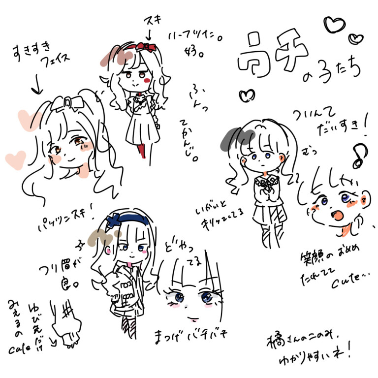

橘杏咲の立ち話もなんですから！ 第２回橘杏咲的“站着聊可说不完！” 第2回
こんにちは!橘杏咲です🌷🤍
大家好！我是橘杏咲🌷🤍
もう…9月ですか!? 暦の上では秋…信じられませんね…
已经……9月了吗!? 日历上都已经是秋天了……真是令人难以置信呢……
ここ1ヶ月は、暑い日が続き、雨や雷の日も多く、かなり天候に振り回されていたような気がします。
最近这一个月里，炎热的天气持续不断，下雨打雷的日子也很多，总觉得被天气折腾得够呛。
私は小学生の頃から自分を晴れ女🔆だと信じて疑っていなかったのですが、最近は雨との遭遇率が高く、もしかして雨女☔️になったのでは..? と思うことが増えました。
我从小学起就一直深信不疑自己是个晴女🔆，但最近碰上下雨的概率实在太高了，越来越多地开始怀疑自己是不是变成雨女☔️了……？
ラジオの収録日が毎回のように雨だったり… 目の前で雷が落ちたり…
广播收录的日子几乎次次下雨……还有雷就劈在眼前……
いや、こういうのは気持ちの問題ですからね!
不对，这种事情说到底还是心态问题嘛！
私はこれからも、自分を晴れ女と信じて生きていきます。
今后我也会继续坚信自己是晴女，这样活下去的。
さてっ
好啦！
今年の夏は皆さん何をされましたか?夏らしいことは楽しめましたか?🌻🍉
今年夏天大家都做了些什么呢？有没有好好享受充满夏日气息的活动呀？🌻🍉
私は8月分のコラムを書いていた頃に取り掛かっていた大学の最終課題無事にすべて提出し、現在は夏休みを満喫中です〜!わ〜!!!🙌🏻🙌🏻
我在写8月那期专栏时正忙着赶工的大学期末作业，已经全部顺利提交啦，现在正尽情享受暑假中〜！哇〜!!!🙌🏻🙌🏻
まとめるのが難しいので、夏にやったことや行った場所を羅列しますね。一息でいきます。
因为很难整理成一段话，我就把夏天做过的事和去过的地方列出来吧。一口气说完哦。
花火大会、お祭り、お誕生日会、ライブ、イベント、アフタヌーンティー、日帰り旅行、お泊まり会、妹とデート、観劇、ゲーム…
烟花大会、夏日祭典、生日派对、演唱会、线下活动、下午茶、一日游、过夜派对、和妹妹约会、看舞台剧、打游戏……
目立ったものはこのくらいでしょうか!!どうですか、大満喫してるでしょう〜!
比较有代表性的大概就是这些吧!! 怎么样，是不是过得超级充实〜！
大学生なので、9月も夏休みが続くので、まだまだエンジョイするつもりですよっ🎶
因为我是大学生，9月也还在放暑假，所以我打算继续尽情玩乐哦🎶
あっ
啊，
もちろん、お仕事もしっかりと取り組んでいます!!!
当然，工作我也有踏踏实实认真完成!!!
勉強は…8月分のコラムで目標に掲げた英語のお勉強は…
至于学习嘛……8月那期专栏里立下目标的英语学习嘛……
まだあまりできていません!!!お恥ずかしい!!!!
还没怎么学呢!!! 真是太惭愧了!!!!
でも流石に、受けなければいけない英語のテストが目前に迫っているので、ちゃんと焦りを感じております。明日、お友達と勉強する予定です…。1人でもちゃんとやるぞ😡!
不过毕竟必须参加的英语考试已经迫在眉睫，我确实也开始感到着急了。打算明天和朋友一起学习……就算一个人也要好好学起来😡！
買い溜めた本も読みたいし、考えなくてもいいことをあれこれ熟考する時間も欲しいのに…💧
明明既想读囤积起来的书，又想留出时间去胡思乱想各种其实根本没必要深究的事情……💧
けれどやるべき事には優先順位をつけて消化するのがセオリーですからね。
但把该做的事情排出优先级逐一解决才是正道嘛。
今は完全に、『英語の勉強』という揺るがぬ答えがありますので。
现在已经有了“学英语”这个毫不动摇的唯一答案。
ここから2週間ほどはこの子に集中したいと思います。
接下来这两周左右，我想把精力全都集中在这上面。
と、反省したところでここからは、夏休みのおうち時間や隙間時間で私がハマっていたことについてお話ししていきたいと思います。
反省完之后，接下来我想聊聊暑假宅家时以及碎片时间里我沉迷的事情。
先ほど羅列した、夏休みエンジョイしてるよ!のお話もしたかったのですが、流石にキリがないので、隙間時間での暇つぶしに絞ってお話しします。
本来我也想聊聊前面列举的那些“暑假玩得超开心！”的趣事，但说起来实在没完没了，所以今天就只聚焦在碎片时间的消遣上吧。
夏休み大満喫トークについては、現在放送中の『橘杏咲の声ラブ!』の4回放送(もしかしたら5回放送でも?)でたくさんお話ししておりますので是非Youtubeをチェックしていただけると嬉しいです!!📻💭
关于畅享暑假的趣事，我在目前正在播出的《橘杏咲の声ラブ!》第4期节目（说不定第5期也有？）里聊了很多，欢迎大家去 YouTube 上收看哦!!📻💭
では、まず1つ目に、私がおうち時間でハマっていたことは…
那么，首先第一件我在宅家时间沉迷的事情是……
『ファッションドリーマーとスイカゲーム』です✨
《时尚造梦》和《西瓜游戏》✨
どちらもNintendo Switchでやっていまして、Youtubeを流しながらSwitchでこの2つ(時々スプラトゥーン)を周回するという、なんともギルティな暇つぶしをしてました。
这两款都是我在 Nintendo Switch 上玩的，一边放着 YouTube 视频，一边用 Switch 轮流刷这两款游戏（偶尔还会玩《斯普拉遁》），过着一种颇具“罪恶感”的消遣时光。
スイカゲームはリリース当初に購入済みだったのですが、ファッションドリーマーは8月のある日の夜、衝動買いしました。
《西瓜游戏》我早在发售初期就买好了，而《时尚造梦》则是8月某个晚上冲动消费买下来的。
Youtubeでいつもの通り、ゲーム配信の切り抜きなどを周回している時にふと、数ヶ月前に観た、とあるVtuberさんのファッションドリーマーの配信の切り抜きが流れてきて、
那天我像往常一样在 YouTube 上刷游戏直播切片时，突然刷到了几个月前看过的一位 VTuber 玩《时尚造梦》的直播切片，
私も!可愛い女の子の着せ替えをしたい!!キャラクリしたい!!!と思い、すぐ購入しました。
心想“我也想给可爱的女孩子换装!! 想捏人!!!”，于是立刻就买了。
そういえば、友達にこのゲームやりたいってラインしたな…と思いラインを遡ってみると
说起来，我记得当时还给朋友发了 LINE 说想玩这个游戏……于是翻回去看聊天记录，发现里面留着：
23:09 さっきスイカゲーム始めたら2500行ったよー
23:30 ファッションドリーマーやりたくなっちゃった
23:44 買った
23:09 刚才打开西瓜游戏一下子就打到2500分啦—
23:30 突然好想玩时尚造梦呀
23:44 买了
という、最高の履歴が残っていました。経緯が分かりやすいです。
这么一段堪称绝妙的聊天记录。来龙去脉一目了然呢。
唐突にファッションドリーマーをやりたくなった理由、それはまさしく、
我突然想玩《时尚造梦》的理由，归根结底就是——
『可愛い女の子を自分の手で生み出したかったから』
“想亲手创造出可爱的女孩子”
です。これに限ります。
仅此而已，别无他求。
私の好きなタイプの女の子について書くのは連載2回目でやることではないのでは…と第2の私が躊躇っていたので、これについてはもう少し私のことを知っていただいてからにしたいと思います。
另一个我有些犹豫，觉得“在连载第2回就大谈自己喜欢的女孩子类型是不是不太合适呀……”，所以关于这个话题，等大家再多了解我一点之后再聊吧。
(きっとその話題だけで2000字は優に超えます)
（光这一个话题我肯定就能轻松写超2000字）
購入してからは、最高に可愛い女の子を3人作り、系統を少しずつ変えつつ理想の女の子の着せ替えを楽しんでおります。
买完之后，我捏出了3位超级可爱的女孩子，一边稍微变换着不同风格，一边享受着给理想中的女孩换装的乐趣。
自分の理想のかわい子ちゃんを着せ替え出来るなんて…本当に幸せな気持ちになれます。
能够亲手给理想中的可爱女孩换装……真的会让人感到无比幸福。
プレイして分かったことの1つとしては、意外と紺色が好き!ということです。品があって、素敵です。
玩完之后我发现了一件事，原来我意外地很喜欢藏青色！既优雅又好看。
紺色のワンピースを美しく着られるような女性になりたいものです。
真想成为能够把藏青色连衣裙穿得很美的女性呀。
このような調子で、家に長時間いられる日は、色々なゲームを回して、最高のおうち時間を過ごしました。
就这样，在能够长时间待在家里的日子里，我轮流玩着各种游戏，度过了最棒的宅家时光。
しあわせです。
好幸福啊。
あっ
啊，
こんな子たちだよ〜というイメージラクガキを添えておきます。
附上“大概是这样的女孩子们哦〜”的印象涂鸦。
好みが分かりやすいですねぇ…。
我的喜好真是太好懂了呢……

もう1つ、私が隙間時間でハマっていたことは…
另一件我在碎片时间里沉迷的事情是……
『本来考えなくて良いことを必要以上に熟考すること』です。
“把本来根本不用想的事情过度深思熟虑”。
これは、私が物心ついた時から好きなことなので、この行為自体にハマっている、という表現を用いるのは少し違いますね。
这其实是我从懂事起就喜欢做的事，所以说“沉迷于这个行为本身”可能有点不太准确。
正確に言うと、その思考回路を「可視化」する。と言うことにハマってます👍🏻✨
准确来说，我最近沉迷的是把那种思考回路“可视化”👍🏻✨
一見頭が良さそうに見えますが、実際は全っっっくそうではなく、この思考タイムによって何かを得ているとは到底思えないんです。
乍一听好像显得很聪明，但实际上完——全不是那么回事，我也根本不觉得靠这段思考时间能得到什么收获。
なぜなら、ほんっっっっとうにどうでもいいことしか考えていないから!🥹
因为，我想的全都是真——的无关紧要的小事！🥹
例えば、「遊び」の起源はどこだろう、心を満足させる行為だと思うから、ヒトの祖が何か物足りなさや疲労を感じた瞬間に生まれたのだろうか…ということや
比如说：“玩耍”的起源在哪里呢？既然它是一种满足心灵的行为，那是不是人类祖先感到某种空虚或疲惫的那一瞬间诞生的呢……诸如此类；
ツインテールに惹かれる理由は何だろう、2つに括った髪の毛が、うさ耳やまさにテール、尻尾を連想させるから、そこからあどけなさを感じるから?👧🏻♡
又比如：为什么会被双马尾吸引呢？是因为扎成两束的头发会让人联想到兔耳朵或者字面意义上的尾巴，从而从中感受到稚气可爱吗？👧🏻♡
その可愛らしさが求められる場面では躊躇わずに出来るけれど、普段はそこまでの可愛さを必要としていないのかな…
在需要展现那种可爱感的场合可以毫不犹豫地扎起来，但平时是不是并不需要那么强烈的可爱感呢……
いや、これは自己肯定感的な話なのだろうか…それとも世間体の話なのだろうか…
不对，这究竟是关乎自我认同感的问题……还是关乎在意他人眼光的问题呢……
と、次々に考えが連鎖して、考えて考えて…
就像这样，念头一个接一个地连锁展开，想啊想啊……
まいっか!🙀👐🏻
算啦！🙀👐🏻
となるのです
最后就会变成这样。
答えは求めておらず、ただ何かを考えるという行為で時間を潰すのが好きなだけなんです。
我并不是在寻找答案，只是单纯喜欢靠“思考某件事”这个行为来打发时间而已。
普段たくさん本を読むわけでもなく、勉強が好きなわけでもないので、知識量が多くない分、考えられる範囲も狭いんです。
我平时既不怎么大量读书，也不算喜欢学习，知识量不多，能思考的范围也就比较狭窄。
その狭い範囲で考えているから、いつまで経っても「まいっか!」で終わっちゃうのかもしれない!と思い、最近はもう少し知識が欲しい!!と思い立ち、本を買ったり、自分の思考を可視化して、面白そうなワードをメモしてみたりしています。
我心想，说不定正是因为一直在那么狭窄的范围内思考，才会不管过多久都总是以“算啦！”收尾！于是最近萌生了“想要多积累一点知识!!”的念头，开始买书来看，还试着把自己的思考过程可视化，把觉得有意思的词汇记在备忘录里。
自分の思考を言葉にするのが苦手なので、そこも上達させたいポイントです😉🍒
我不太擅长把自己的想法转化成语言，这一点也是我希望提升的地方😉🍒
まだまだただの考え事止まりですが、これから知識や経験を増やしていけば、何かしらに役立つのでは?と思い続けていきたいなぁ、なんて思ってます☺️
虽然现在还只是停留在胡思乱想的阶段，但我觉得只要今后不断增加知识和阅历，说不定会在某些地方派上用场呢？所以我想继续坚持下去呀☺️
大学での学びにも繋げていきたいですしね…。
我也希望能把这些和大学里的学习联系起来……
せっかくお仕事をしながらも大学に通わせていただいているので、何かしら自分に役立てないと!勿体無いです!!
好不容易能一边工作一边上大学，要是不从中收获点什么用到自己身上，那也太浪费啦!!
ああ、文章を書きながら思ったんです…
啊，我边写文章边突然意识到一个问题……
また真面目(風)(中身はあまりない)な文章を長々と書いてしまったな…と。
我好像又长篇大论地写了一堆看似一本正经（其实没什么干货）的文字呢……
このコラムは書きながら何を書くか決めているので今回は予想以上に私の謎思考のお披露目ターンが長くなってしまいました。
因为这篇专栏我都是边写边决定要写什么的，所以这一回展示我那些莫名其妙的脑内思考的篇幅比预想中长了好多。
許してください。
请原谅我吧。
来月は、、、もう10月!?!?!?!?
下个月……就已经是10月了!?!?!?!?
どうしよう、20歳が目前に迫っていますよ…
怎么办呀，20岁已经近在眼前了哦……
もう大人、大人じゃないですか👧🏻💧
这不就已经是大人、妥妥的大人了吗👧🏻💧
ハタチになる準備ということで、9月の目標は
作为迈入20岁的准备，我9月份的目标是——
『有言実行』です
《言出必行》！
言ったことはやる! という基本的な意識を無理やりにでも身につけたいと思います。
哪怕是强迫自己，我也想把“说到就要做到！”这个最基本的意识牢牢刻进心里。
ここまで読んでくださり、ありがとうございました(;_;)🙇🏻♀️🙇🏻♀️
非常感谢大家一直读到这里(;_;)🙇🏻♀️🙇🏻♀️
次回はもう少し書きたいことをまとめてスッキリした文章をかけたらな、と!!!
希望下一回我能把想写的内容稍微整理一下，写出更加清爽利落的文章!!!
テーマや質問、感想などお待ちしております!!📫
依然期待大家的主题建议、提问和读后感想哦!!📫
ではっ
那么下次见啦！
橘さんに質問！向橘小姐提问！
Q：橘さんがこどもの頃に観ていたアニメを教えて下さい！（福岡県・霧雨が降る森）
问：请告诉我们橘小姐小时候看过的动画吧！（福冈县·雾雨飘散之森）
はいっ！
好嘞！
幼稚園生、小学生の頃はプリキュアや、りるプリっ、ドラえもん、ここたま、などいわゆる子供向けアニメを色々と観ていましたね!!
幼儿园和小学的时候，我看过《光之美少女》《变身！偶像公主》《哆啦A梦》《见习神仙 秘密的心灵》等等各种所谓的儿童向动画呢!!
小学校高学年になっても、妹と一緒に色々観てました!🧚🏻♀️
就算到了小学高年级，我也还会和妹妹一起看各种各样的动画！🧚🏻♀️
それこそ、ここたまは弊社の先輩である本渡楓さんが、主人公である 四葉こころちゃんを演じていらっしゃっていて小学5年生、こころちゃんと同じ年の時に妹と観ていました🥚✨
说起来，《见习神仙 秘密的心灵》正是由同事务所的前辈本渡枫小姐为主人公四叶心配音的，小学5年级那年，我和四叶心同岁的时候经常和妹妹一起看🥚✨
この時に、こころちゃんの声可愛い!!と思って自分で調べたのをよく覚えています。
我至今还清楚地记得，当时觉得“小心的声音好可爱!!”，还自己上网查了配音演员。
丁度この頃、声優さんというお仕事を認識したのだと思います。
应该也就是在那个时候，我第一次认识到了“声优”这份职业。
今ではそんな本渡さんと同じ事務所に所属している、なんて昔の私に言っても信じてもらえないと思います。笑
如今自己竟然和那位本渡前辈隶属于同一家事务所，就算告诉小时候的我，她肯定也不会相信的吧。（笑）
私も小さな子どもたちに夢を与えられるような存在になりたいですね。
我也想成为能够带给小朋友们梦想的存在呢。